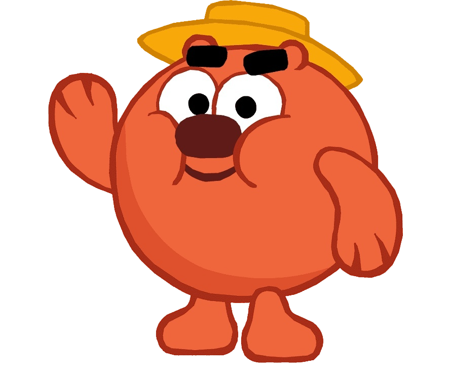
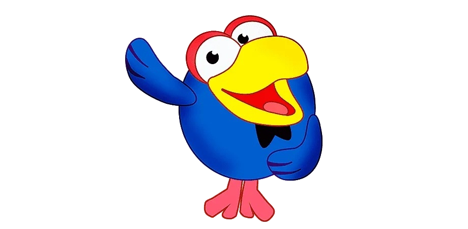

01
Удивление Карыча
Кар-Карыч наблюдает, как Копатыч играючи поднимает тяжёлые гири. Сам ворон не может справиться даже с лёгкими гантелями — и это становится началом большого пути.
Смешарики · Спорт
История о том, как Кар-Карыч и Копатыч доказали: «плато» — не приговор, а этап, который берётся упорством.
Смотреть серию ▶Окунись в атмосферу «плато» и победы над собой прямо на сайте.
Пройди путь от лёгких гантелей до преодоления «плато». Жми «Тренироваться» и следи за силой.
Кар-Карыч наблюдает, как Копатыч играючи поднимает тяжёлые гири. Сам ворон не может справиться даже с лёгкими гантелями — и это становится началом большого пути.
Копатыч объясняет: в тяжёлой атлетике к весу подходят постепенно. С каждой тренировкой нагрузку увеличивают — мышцы привыкают, а когда текущий вес становится лёгким, его повышают.
Медведь признаётся: два года он не может одолеть одну штангу. Это то самое «плато» — состояние, когда кажется, что больший вес уже не поднять. Но даже его можно преодолеть упорными тренировками.
Друзья тренируются вместе каждый день. Постепенно Кар-Карыч поднимает всё более тяжёлые веса и догоняет Копатыча по силе.
Карыч берёт новый, ещё более сложный вес — и сталкивается с серьёзными трудностями. Тогда Копатыч, желая показать правильный подход, сам берёт штангу и поднимает её.
Кар-Карыч замечает: это тот самый вес, который Копатыч не мог поднять два года назад. Медведь осознаёт это — и на его лице появляется широкая улыбка. «Плато» взято. Упорство победило.

Тренер · Медведь
Два года стоял на «плато». Доказал: даже самый тяжёлый вес однажды поддастся — если не сдаваться.

Ученик · Ворон
Начал с лёгких гантелей — и догнал Копатыча по силе. Пример того, что систематичность важнее таланта.
«Притяжение земли не обманешь. Но и оно не обманет того, кто тренируется каждый день.»
Регулярность важнее разовых подвигов. Каждый день — маленький шаг.
Нагрузку повышают тогда, когда текущий вес стал привычным.
Даже двухлетний застой берётся упорством. Не сдавайся.
Зажми кнопку и держи — почувствуй притяжение земли.
Поделись впечатлением о серии и её главной мысли.
Серия топ! «Плато» реально мотивирует не сдаваться в учёбе и спорте. Надеюсь, вам понравился сайт 🔥
Смешарики. Спорт
История Копатыча и Кар-Карыча напоминает: сила приходит не сразу. Но тот, кто тренируется каждый день, однажды поднимет то, что казалось невозможным.